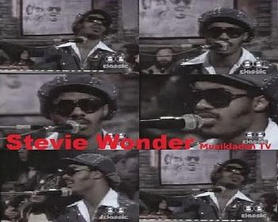
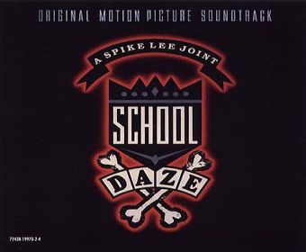
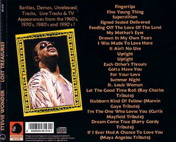

Over many decades making music, many songs that have been omitted without being released by Stevie
Wonder. Some have been discovered through some intervention on television or in concert, others however have ended up in the hands of other artists, and
was later rescued by Stevie for a timely intervention. Here we can see and hear some of them ...
I Can See The Sun In Late December

This is the case of "I Can See The Sun In Late December", a song that
Stevie Wonder deposited in the great voice of Roberta Flack for their album from 1975 Feel Like Makin 'Love. A beautiful
song that Stevie has the charm of those years 70 and that we can see and hear as performed by Stevie in 1975 in the German program called Musikladen
-substitute another success earlier called Beat-Club- in which greats artists interpreting their hits in live and
concert format.
I bet ya you can't even see the sun
Ah, the sun is shining
Right before your eyes
I bet ya you can't even see yourself
'Cause when you're lost
Sometimes yourself is hard to find
I can see the sun in late December
I see forgotten treasures 'neath the sea
Tides that defeat identity
Washing away the beauty that was in your mind
I can hear the sounds you don't remember
The sounds of birds in trees in harmony
Chords being blown by a gentle breeze
Making the perfect melody you left behind
I bet ya you can't even see the moon
'Cause in your eyes you only see the darkest side
I bet ya you can't wish upon a star
'Cause in your life
Your pride has pushed your dreams aside, hey
(Repeat)
(Repeat)
(Repeat)
I bet ya I can see the sun
See forgotton treasures 'neath the sea
Tides that defeat identity (I can see the sun)
Washing away the beauty in your mind
I bet ya I can hear the sounds
Sounds of birds in trees in harmony
Chords being blown by a gentle breeze
(Sounds you don't remember)
I can hear the sounds, sounds
Sounds you don't remember
I can see the sun, sun
Sun in late December
(Repeat)
I can see the sun (Repeat)
I Can Only Be Me

Another of those songs that are part of the trunk of unreleased albums by Stevie Wonder is "I Can Only Be Me". One song
that deposited full confidence in Keith John, important vocal support for Stevie many years. Part of the soundtrack of
the movie School Daze in the year 1987, was later performed by Eva Cassidy in
her album Imagine in 2002 or Sarah Mitchell, album You Give Me
Something in the year 2009, and many more.
Here we can see his creator, interpreting it with the magic and simplicity as only he can conceive.
Butterflies begin
From having been another
As a child is born
From being in a mother's womb
But how many times have you
wished you were some other
someone than who you are
Yet who's to say
If all were uncovered
You will like what you see
You can only be you
As I can only be me
Flowers cannot bloom
Until it is their season
As we would not be here
unless it was our destiny
But how many times have you
wished to be in spaces
Time places than what you were
Yet who's to say with unfamiliar
faces You could anymore be
Loving you that you see
You can only be you
As I can only be
Me
I can only be me
Good Light
Following these songs made by Stevie Wonder and form part of the trunk of issues without being
published, we find Good Light. Possibly composed in the 80's, between albums In Square Circle and Jungle Fever, and was
heard in a concert at Wembley Arena in London in 1989, celebrating his birthday.
I'm A Man
Sometimes the luck is a matter of knowing look, and sometimes you can find her suddenly. In this way,
they found peple very lucky, who attended the concerts at Wembley Arena in London in the year 1989 where, apart from celebrating the birthday of
Stevie Wonder, could enjoy several songs. Including this song, I'm A Man.
Since the day
From
He always felt he had no right
To say he wasn't there for with the great event
Or living cause he was a man
Building worlds in time that he
Feeling he could not believe...
To believe he'd not been part of the master plan
Because he calls himself a man
I'm a man
Yes I am
And I will kick anybody in their pants
Who tells me that I am not a man
I'm a man
Yes I am
And I will pass a law that says to kill who think they can
Be more than I am not a man
Do do, do do do do, do do do do, do do
It's not to say that we don't have the right
To pride ourselves in what we've done in life
But what we haven't is what we must have to achieve
Respect by all his woman a man
Until the day that hated wars subside
The man you think you are is but a lie
Cause
The king of peace is the greatest man
I'm a man
Yes I am
And I will kick anybody in their pants
Who tells me that I am not a man
I'm a man, yea
Yes I am
And I will pass a law that says to kill who think they can
Be more than I am not a man
I'm a man, yea
Yes I am
And I will kick anybody in their ass
Who tells me that I am not a man
I'm a man, yea
Yes I am
And I will pass a law that says to kill who think they can
Be more than I am not a man
It`s Growing
With a distinctive sound of Stevie from the 80's, we see another rarity song without publication of
Stevie Wonder. This is It's Growing, probably used as input to their concerts that passed in the early 80's. In this
case the Stevie's concert performed in the year 1985 by Japan.
I got a thing for you baby and it won't let go
I got a thing for you baby and it grows grows grows grows grows
I got something for the body and its burning hot
I got something for the spirit that hate can't stop stop stop
It's growing, it's growing
It's getting longer and stronger
And wider and kinder, it's growing
Seed of your heart
It's growing, it's growing
It's getting wider and deeper
And neater and sweeter, it's growing
Seed of your heart
We say "Oh yes"
They say "Oh no"
We say "Love's young"
They say "Love's old"
We say that "Love has proven
It can stand the test of time."
They laugh in our faces and say
"It's just a fixation in our minds."
We say "It's time for us to live as one."
They say we're fools that hearts never
Ever will be done."
They say the things we're saying
They've already heard
But we say love's truth is of course the last word
So I got a thing for you baby and it won't let go
I got a thing for you baby and it grows grows grows grows grows
I got something for the body and its burning hot
I got something for the spirit that hate can't stop stop stop
I got a thing for you baby and it won't let go
I got a thing for you baby and it grows grows grows grows grows
I got something for the body and its burning hot
I got something for the spirit that hate can't stop stop stop
You know what
It's growing, it's growing
It's getting longer and stronger
And kinder and finer, it's growing
Seed of your heart
Oh it's growing, Seed of your heart it's growing
It's getting wider and deeper
And neater and sweeter, it's growing
Seed of your heart
Oh it's growing, the seed of love inside you
It's growing
It's getting longer and stronger
And kinder and finer, it's growing
Seed of your heart
Oh it's growing, the seed of love inside you
It's growing yeah
It's getting wider and deeper
And neater and sweeter, it's growing
Seed of your heart
Fear Can't Put Dreams to sleep
"Fear Can't Put Dreams To Sleep" is how could it be otherwise, another
song written by Stevie showing their concerns and wishes for ourselves to keep alive the flame for a world free and without hate. Published around
1991, there have been several times when it has been interpreted. With Take 6 at the Democratic convention with Obama in 2008, and early 90's in this
video.
From out of the blue there came to me a question
the kind that until you answer won’t let you be
The question was if I was blessed
w/the gift of sight
what most in life would I want to see
That made me think of an old story
about a boy who had no feet …
no feet or hands who was asked if he could walk what would he do
And he said, as I understand,
Chorus: If my eyes were to see
let them be the witness of a world that is color free
And if my limbs were to move
let me touch and walk in land where hate could no longer be
And if my ears were to hear
let it be like sweetest music be in sync with harmony
And if my mouth were to speak,
let me talk about a land were love’s for all
and fear can’t put dreams to sleep
And in a crowd there came two sisters
one talking to the other one in sign
and she asked of the sister of all things if you could hear
what would you like to hear most at this time
She, without any hesitation,
gave the tale of girl that
could talk what would you say
and she wasn’t seeing at all
Repeat Chorus: If my eyes were to see
let them be the witness of a world that is color free
And if my limbs were to move
let me touch and walk in land where hate could no longer be
And if my ears were to hear let it like the sweetest music be in unity and harmony And if my mouth were to speak, let me talk about a land were
love’s for all and fear can’t put dreams to sleep Repeat Chorus: If my eyes were to see let them be the witness of a world that is color free And if
my limbs were to move let me touch and walk in land where hate could no longer be And if my ears were to hear let it like the sweetest music be in
unity and harmony And if my mouth were to speak, let me talk about a land were love’s for all and fear can’t put dreams to sleep Repeat Chorus: If
my eyes were to see let them be the witness of a world that is color free And if my limbs were to move let me touch and walk in land where hate
could no longer be And if my ears were to hear let it like the sweetest music be in unity and harmony And if my mouth were to speak, let me talk
about a land were love’s for all and fear can’t put dreams to sleep
Truth Is The Light
Another of those wonders in form of song by Stevie Wonder unpublished is the song "Truth
Is The Light". Performed by Stevie in his live concerts like this one, celebrated in Japan, year 1990, and also used in very specific and
special occasions like the tribute in Los Angeles Shrine Auditorium by the 60th anniversary in the show business of Sammy Davis Jr.

Fine Young Thing
Was the first years of the most creative decade of Stevie Wonder -the 70'- when this video was recorded in the studio with his band Wonderlove. The
name of the song is "Fine Young Thing" and though not published at this time, can be found in a collection under the name
of "Lost Treasures", where we can find rarities, live recordings, for TV and unreleased songs.
Living For Your Love
Stevie Wonder's 70s is one of the most glorious times any artist has ever had. His work Songs In The Key Of Love is his masterpiece, where each song is in itself a work of art. One of the songs that could have been part of that work is this unpublished rarity titled "Living For Your Love".
Other rarities...
There are many songs of Stevie Wonder unpublished, another sample of this are these lost sounds from
decade of the 70s .... and latest.